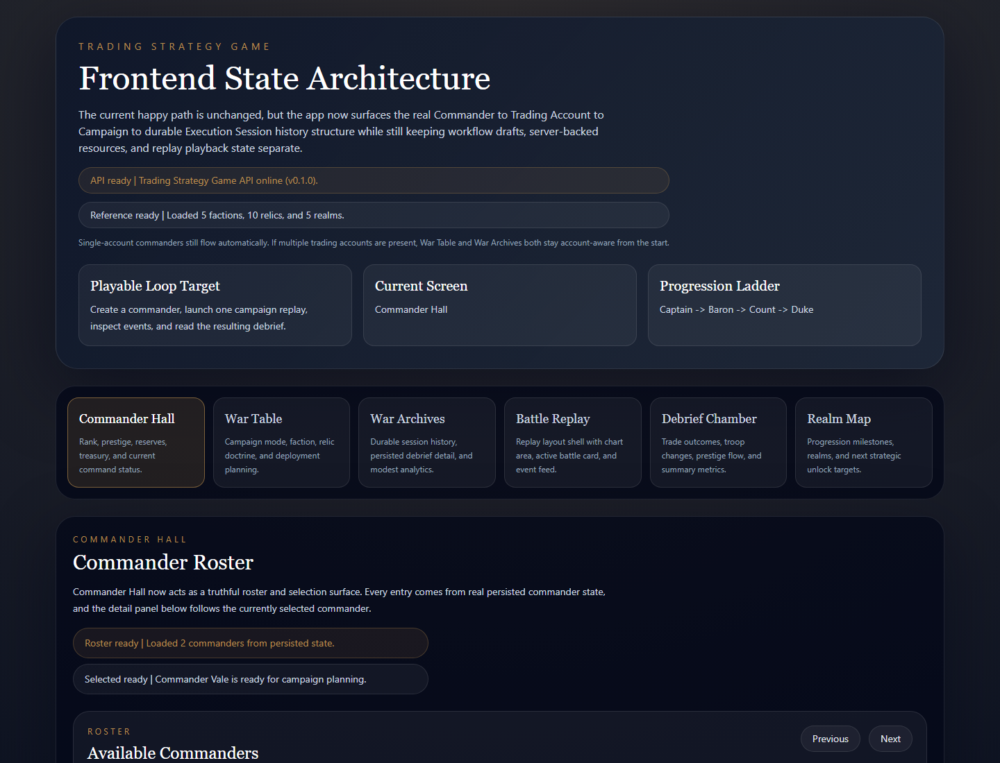

Lead ShowcaseTypeScript / React / Fastify / Simulation
Empire of Drawdown
A deterministic trading-strategy game with replay, campaign rules, reusable strategy execution, API boundaries, and a browser debrief flow.
169 tests passed
Demo API returned 200
Replay + debrief UI
Open case study